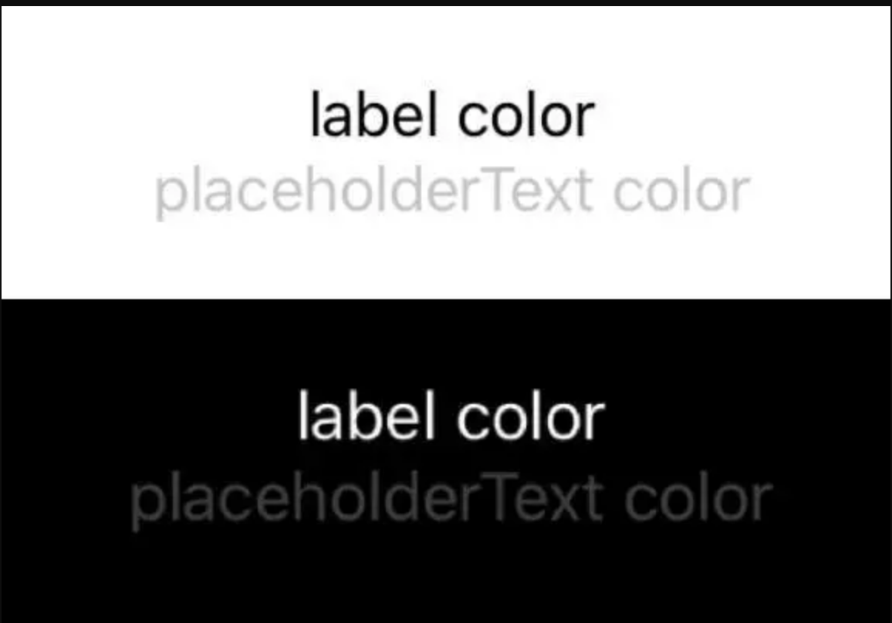
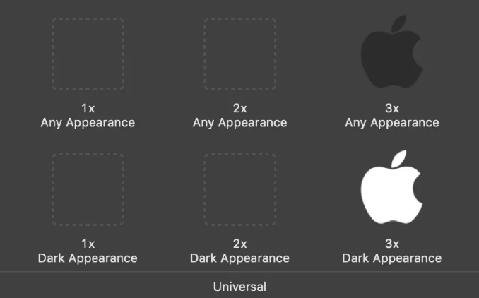
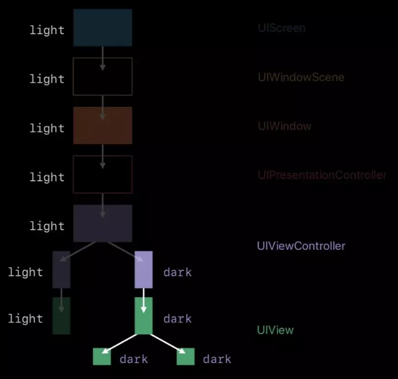

如何适配DarkMode
DarkMode 主要从两个方面来适配，一是颜色，二是图片，适配的代码不是很多，接下来让我们一起来看看具体是怎么操作的吧。
颜色适配
iOS 13 之前 UIColor 只能表示一种颜色，从 iOS 13 开始 UIColor 是一个动态的颜色，它可以在 LightMode 和 DarkMode 拥有不同的颜色。
iOS 13 下 UIColor 增加了很多动态颜色，我们来看下用系统提供的颜色能实现怎么样的效果。
@available(iOS 13.0, *)
open class var systemBackground: UIColor { get }
@available(iOS 13.0, *)
open class var label: UIColor { get }
@available(iOS 13.0, *)
open class var placeholderText: UIColor { get }
...
view.backgroundColor = UIColor.systemBackground
label.textColor = UIColor.label
placeholderLabel.textColor = UIColor.placeholderText
如图效果
如何创建一个自己的动态色UIColor
上面我们说到系统提供了一些动态的颜色供我们使用，但是在正常开发中，系统提供的颜色肯定是不够用的，所以我们要自己创建动态颜色。
iOS 13 下 UIColor 增加了一个初始化方法，我们可以用这个初始化方法来创建动态颜色。
@available(iOS 13.0, *)
public init(dynamicProvider: @escaping (UITraitCollection) -> UIColor)
这个方法要求传一个闭包进去，当系统从 LightMode 和 DarkMode 之间切换的时候就会触发这个回调。
这个闭包返回一个 UITraitCollection 类，我们要用这个类的 userInterfaceStyle 是一个枚举，声明如下
@available(iOS 12.0, *)
public enum UIUserInterfaceStyle : Int {
case unspecified
case light
case dark
}
这个枚举会告诉我们当前是 LightMode or DarkMode
现在我们创建两个 UIColor 并赋值给 view.backgroundColor 和 label，代码如下
let backgroundColor = UIColor { (trainCollection) -> UIColor in
if trainCollection.userInterfaceStyle == .dark {
return UIColor.black
} else {
return UIColor.white
}
}
view.backgroundColor = backgroundColor
let labelColor = UIColor { (trainCollection) -> UIColor in
if trainCollection.userInterfaceStyle == .dark {
return UIColor.white
} else {
return UIColor.black
}
}
label.textColor = labelColor
现在，我们做完了动图中背景色和文本颜色的适配，接下来我们看看图片如何适配
适配图片
打开 Assets.xcassets
把图片拖拽进去，我们可以看到这样的页面
然后我们在右侧工具栏中点击最后一栏，点击 Appearances 选择 Any,Dark，, 如图所示
我们把 DarkMode 的图片拖进去，如图所示
最后我们加上 ImageView 的代码
imageView.image = UIImage(named: "icon")
现在我们就已经完成颜色和图片的 DarkMode 适配
如何获取当前模式 (Light or Dark)
我们可以看到，不管是颜色还是图片，适配都是系统完成的，我们不用关心现在是什么样的样式。
但是在某些场景下，我们可能会有根据当前样式来做一些其他适配的需求，这时我们就需要知道现在什么样式。
我们可以在 UIViewController 或 UIView 中调用 traitCollection.userInterfaceStyle 来获取当前视图的样式，代码如下
if trainCollection.userInterfaceStyle == .dark {
// Dark
} else {
// Light
}
那么我们什么时候需要用这样的方法做适配呢，比如说当我们使用 CGColor 的时候，上面说到 UIColor 在 iOS 13 下变成了一个动态颜色，但是 CGColor 仍然只能表示单一的颜色，所以当我们使用到 CGColor 的时候，我们就可以用上面的方法做适配。
颜色
对于 CGColor 我们还有还有另一种适配方法，代码如下
let resolvedColor = labelColor.resolvedColor(with: traitCollection) layer.borderColor = resolvedColor.cgColor
resolvedColor 方法会根据传递进去的 traitCollection 返回对应的颜色。
图片
对于 UIImage 我们也有类似的方法，代码如下
let image = UIImage(named: "icon") let resovledImage = image?.imageAsset?.image(with: traitCollection)
如何监听模式变化
上面我们说了如何获取当前模式，但是我们要搭配监听方法一起使用，当 light dark 模式切换的时候，要把上面的代码再执行一遍。系统为我们提供了一个回调方法，当 light dark 切换时就会触发这个方法。
override func traitCollectionDidChange(_ previousTraitCollection: UITraitCollection?) {
super.traitCollectionDidChange(previousTraitCollection)
if traitCollection.hasDifferentColorAppearance(comparedTo: previousTraitCollection) {
// 适配代码
}
}
如何改变当前模式
我们可以看到在动图中是直接改系统的模式，从而让 App 的模式修改，但是对于某些有夜间模式功能的 App 来说，如果用户打开了夜间模式，那么即使现在系统是 light 模式，也要强制用 dark 模式。
我们可以用以下代码将当前 UIViewController 或UIView 的模式。
overrideUserInterfaceStyle = .dark print(traitCollection.userInterfaceStyle) // dark
需要给每一个 Controller 和 View 都设置一遍吗
答案是不需要，我们先来看一张图。
当我们设置一个 controller 为 dark 之后，这个 controller 下的 view，都会是 dark mode，但是后续 present 的 controller 仍然是跟随系统的样式。
因为苹果对 overrideUserInterfaceStyle 属性的解释是这样的。
当我们在一个普通的 controller, view 上重写这个属性，只会影响当前的视图，不会影响前面的 controller 和后续 present 的 controller。
但是当我们在 window 上设置 overrideUserInterfaceStyle 的时候，就会影响 window 下所有的 controller, view，包括后续推出的 controller。
如果 App 打开夜间模式，那么很简单我们只需要设置 window 的 overrideUserInterfaceStyle 属性就好了。